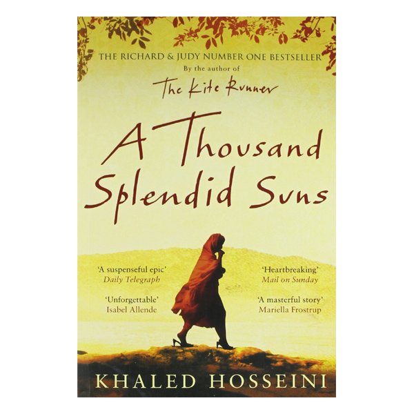
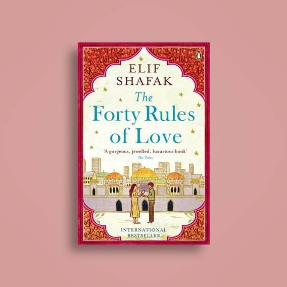

-

Summary
Mariam is only fifteen when she is sent to Kabul to marry the troubled and bitter Rasheed, who is thirty years her senior. Nearly two decades later, in a climate of growing unrest, tragedy strikes fifteen-year-old Laila, who must leave her home and join Mariam's unhappy household. Laila and Mariam are to find consolation in each other, their friendship to grow as deep as the bond between sisters, as strong as the ties between mother and daughter.
-

Summary
The Forty Rules of Love is a 2009 novel by Elif Shafak. The book tells the story of Ella Rubinstein, a woman in her late thirties who has settled into the complacency of her life. She exists without drive or passion. The narrative follows her unlikely escape from what at first appears to be inevitable unhappiness. The novel also concerns itself with the deep, fraternal love between Sufi dervish Shams of Tabriz and the mystical scholar-poet Rumi. The story of Shams and Rumi comes to Ella through a book she is reviewing for her new job as an assistant to a literary agent; that book, Sweet Blasphemy, is a novel about the lives of the two mystics and the friends, families, and enemies they touched. As Ella reads Sweet Blasphemy, she becomes increasingly aware of the lack of love in her life compared to the love experienced by the characters in the book. Ella tends to relate to the world around her through her relationships, and her dual roles of mother and wife. Pouring over the pages of Sweet Blasphemy, Ella grows discontent with her passionless marriage to David and inspired by the love related by the author, Aziz. This study guide references the 2011 Penguin Books Edition of the text.